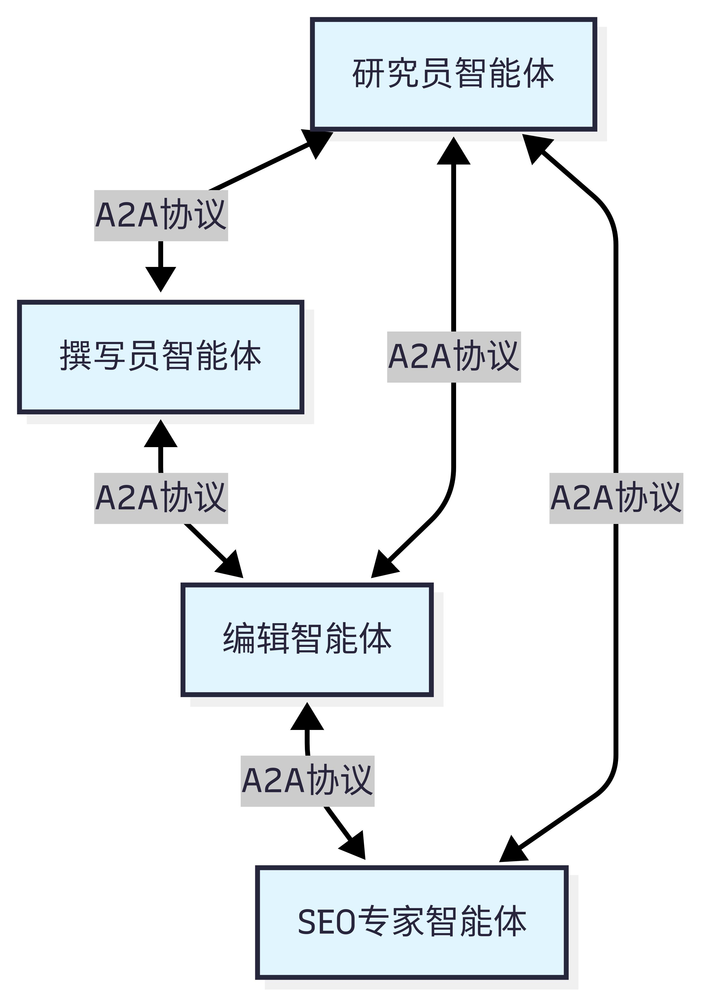

原理第三层：多Agent调度系统

OMX 独创“专家团队机制”，内置33个预制专精Agent角色，将复杂开发任务智能拆解、自动路由，精准匹配最适合的AI专家角色，实现超越单智能体的工程化协作能力。
01. 全栈角色池：从需求到运维的专家矩阵

覆盖软件工程全生命周期的角色分工： ✦ 战略层：需求分析师、架构师 ✦ 执行层：前后端开发、数据库专家 ✦ 保障层：测试工程师、安全审计员、运维专家 拒绝“万能AI”的平庸，让专业的AI做专业的事。
机制优势：任务自动拆解与分发，如同拥有一个无需休息的精英开发团队。
02. 技术底座：Git Worktree 并行隔离机制

解决多智能体协作冲突的关键技术： ✦物理隔离：每个Agent拥有独立工作目录与分支 ✦并行开发：多任务同时进行，环境互不干扰 ✦自动聚合：主调度器统一合并代码，无缝交付 彻底杜绝多人协作的代码冲突难题。
技术价值：实现AI团队的“并行即并发”，开发效率呈指数级提升。